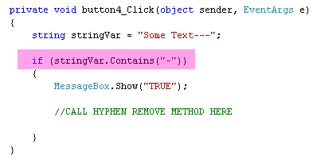

The Contains Method in C# .NET
The contains method can be used if you want to check if a string contains certain characters. It's fairly simple to use. Here's an example:

After the contains method, you type a pair of round brackets. In between the round brackets, you type the text you're checking for. In our code, we're using an if statement. If it's true that the string contains a "-" character, then some code can be executed.
A more complicated, and probably more useful, method that you'll need to know about is called IndexOf. That's the next lesson.